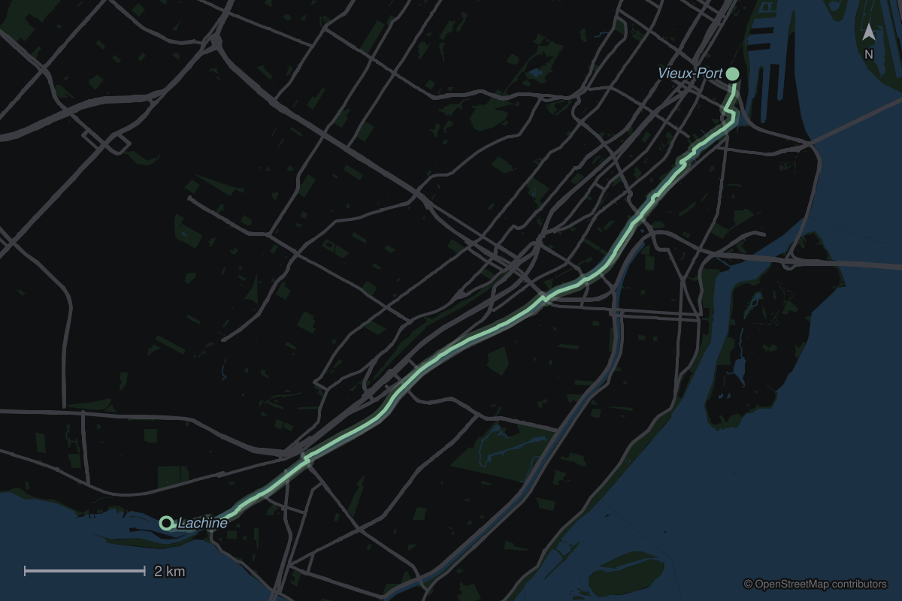
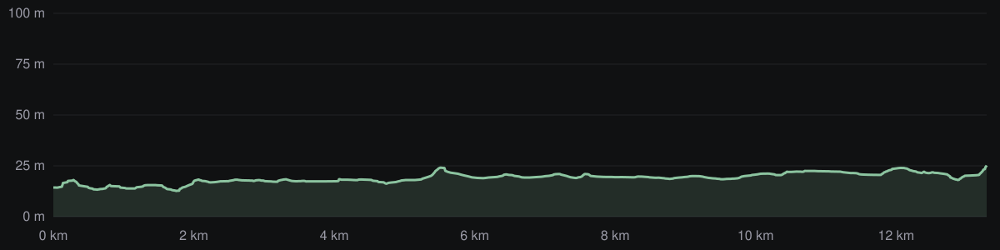

The Lachine Canal, from the Old Port to Lachine
Last updated: November 21, 2026
A flat path along the water through the history of industrial Montréal: locks, brick factories turned into lofts, the Atwater Market, and Lac Saint-Louis at the end.

- Distance
- 14.5 km one way, from the Old Port to Lachine
- Elevation gain
- Almost none: it’s flat
- Time
- About 3 h 30 one way on foot, or any stretch you like
- Difficulty
- Easy
- Start
- Old Port of Montréal, at the first lock
- Season
- All year
Map

Elevation profile

The route
The canal starts at the Old Port, by the first lock, and runs south-west for about 14.5 km to Lachine. The path follows the water the whole way, shared with cyclists, so keep to the walking side.
The first kilometres pass between old factories, silos and bridges, many of them now homes and workshops. Stop at the Atwater Market for a coffee or a picnic by the water, then keep going west, where the canal grows wider and greener.
At the end, the canal opens onto Lac Saint-Louis in Lachine. You don’t have to walk it all: any stretch makes a good walk, out and back.
Good to know
- Pick a stretch. Old Port to the Atwater Market is a lively walk; west of it is quieter.
- Shared path. Cyclists are many on fine days: walk on the side and watch the crossings.
- Getting back. Walking one way? Plan your return by public transport before you set off.
- All year. The path is beautiful in every season, and a good winter walk when the trails are icy.
Photos


Keep the day with Arpente
Tap record at the start and put your iPhone in your pocket. Arpente draws your route and measures the distance, time and elevation gain, even with the screen off. Add a photo and a note, and the outing stays in your journal. Discover Arpente.
Other outings
 Mont Albert11.6 km return by the north side, or a 17.3 km loop
Mont Albert11.6 km return by the north side, or a 17.3 km loop Acropole des DraveursAbout 10.4 km return to the first summit, 11.2 km to the third
Acropole des DraveursAbout 10.4 km return to the first summit, 11.2 km to the third Sentier de la StatueAbout 7.6 km return, or 3.6 km return to the Bellevue lookout
Sentier de la StatueAbout 7.6 km return, or 3.6 km return to the Bellevue lookout Mount RoyalAbout 1.4 km from the top of rue Peel to the lookout, about 2 km to the cross
Mount RoyalAbout 1.4 km from the top of rue Peel to the lookout, about 2 km to the cross
The route on the map is indicative, computed with BRouter on OpenStreetMap data (© OpenStreetMap contributors, ODbL); elevations from SRTM. It doesn’t replace the park’s official map. Distances, elevation and times in the table come from park sources: check conditions before you go.